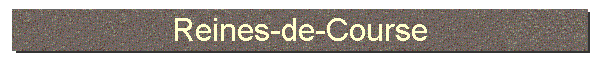 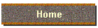 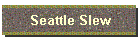 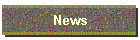 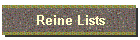 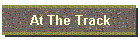 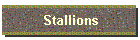 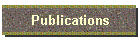 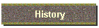 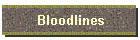

|
         
|
|
“I’ve been breeding racehorses for over 30 years and if you believe, as I do, that
the mare is the key to breeding horses that can run, then I urge you to read
Ellen Parker’s Pedlines on a
regular basis. I think
she is one of the best and most rewarding pedigree authorities in the country.” ---John
Forsythe Material in this site last updated: April 15, 2004 - Our short list of Horses To Watch produced two winners at Santa Anita on April 14th: Alozaina $19.40 Win and American All Star $10.40 Win - See At The Track April 14, 2004 - Does Smarty Jones have a ten furlong pedigree? - See Triple Crown 2004 April 13, 2004 - New Pedigree Picks To Watch - See At The Track
Friends Lake (above), one of our At The Track selections, wins the Florida Derby, returning $76.80, $24.80 and $12.20 Four New Reines are named and have been added to the lists on this site: Berriedale, Miss Brief, Ormonda and Whirl Right. See their story in Pedlines #97 (April 2004) issue. John Taintor Foote's classic "The Look of Eagles" was reprinted with permission from the family in the December 2003 holiday issue of PEDLINES. Only a few copies are left, and can be obtained for $10.
There will be a number of articles added to this site in the near future, usually from the pages of previous issues of Pedlines, and while our initial choice, Ruffian, may sound odd at first, she is a striking example of choosing bloodlines that, despite her moments of greatness, did nothing more than produce an accident waiting to happen.
The Reines-de-Course ("Queens of the Turf") series was created by Ellen Parker in 1991 as a guide to influential female Thoroughbred families that could be utilized to improve the breed. Now, twelve years after its inception, the number of mares given the coveted designation of Reine-de-Course has grown to over 500. More than a list of names, meticulous research and lengthy articles have surrounded the naming of each family, creating a historical documentation on female Thoroughbred families not found in any other singular location. As "Bull" Hancock observed, "the family is stronger than the individual", and prior to the creation of the Reine-de-Course series very little information was widely available. Today the Reines have become part of two computer pedigree programs (not unlike the list of Chefs-de-Race, though Reines don't come with magical 'numbers'), and are a solid source of information impacting breeder and buyer decisions. Even a few handicappers have been known to consider female family influences in making their decisions. Ellen Parker, who Leon Rasmussen once dubbed as "Round Table's Boswell", brings to the Reines the same time-consuming passion and love she offers breeders when analyzing their mares, or when she is writing each issue of our monthly newsletter, Pedlines. We hope you enjoy your trip through our website, where the Thoroughbred is both King and Queen... ---Ron Parker
Contact InformationHave a comment or a question? Please use the E-Mail address below and we'll get back to you as soon as possible. E-Mail reinedecourse@earthlink.net FAX 925-513-8276
Other Industry LinksNote: The Del Mar Pedigree Database allows changes by viewers and, while Del Mar claims controls via screening and viewer observations that minimize errors, its accuracy cannot be guaranteed. Although we generally work with our own pedigree programs, we have found it to be helpful, and it can be a handy tool for those of you, lacking other resources, in search of a pedigree. Simply type the name of the horse whose pedigree you want in the box below, indicate the number of generations (4 thru 9) and click on Get Free Pedigree. This will take you directly to the requested information on the Del Mar website. To explore the full site, click on the link listed below for Del Mar Pedigree Site.
Ellen Jackson's Victory Rose Thoroughbreds offers a variety of stallions to select from, and offers a Best Match Analysis provided by Ellen Parker. For more information about Victory Rose Thoroughbreds visit the website at www.victoryrose.com
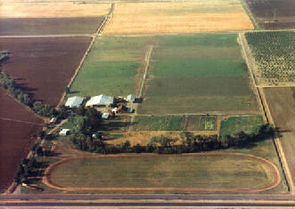 Victory Rose Thoroughbreds
|
|
Copyright © 2004, Ron & Ellen Parker. All Rights Reserved. |

{kind=link}